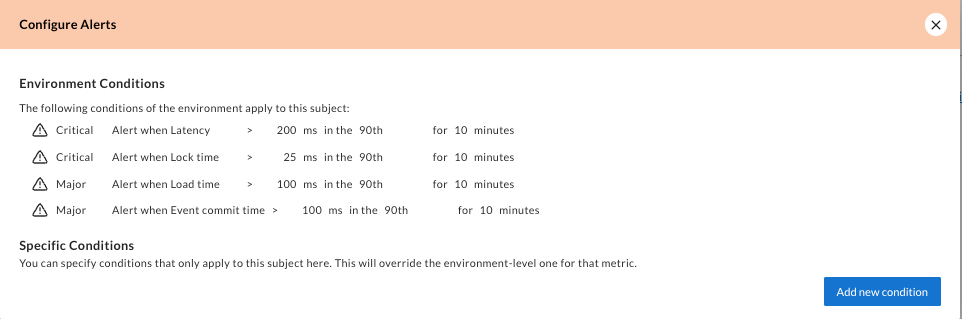

The "Aggregates" Tab
The Aggregates tab lists the Aggregates within your Workspace and Environment. So, what exactly is an Aggregate?
![A screenshot of AxonIQ Console Dashboard corresponding to the 'Aggregates' Tab. The dashboard shows on the right side a list of all the applications connected to AxonIQ Console. On the left side, expanding for about 80% of the width, a table with information about all the Aggreates is shown. The table includes the following columns: Application name, Aggregate, Throughput, Error Rate, Execution Time, Load Time, Lock Time and Stream Size. Below the table, on the right side there is a message to explain that the information on the table will automatically refresh every 20 seconds.](../_images/ac-dashboard-aggregates.png)
In the context of the Axon Framework, an Aggregate is a logical group of domain objects that can be treated as a single unitin regards to data changes. In doing so, they reflect the class’ that are configured as aggregates (for example through the @Aggregate annotation) in your application.
Using AxonIQ Console, developers can get the necessary insight into all the aggregates defined within their system, including their types and instances. As shown in the table above, developers can also see which aggregates are defined per application.
Aggregate details
Click on any row in the table to get more details on the statistics of the selected Aggregate, just as with Processors.
The aggergate detail view has two main areas:
-
At the top there is a table that allows you to choose to display a list of handlers defined for the aggregate, a list of message sources for the aggregate, or a list of message destinations for the aggregate. Clicking on any row in this table will take you to the Handler Details view in the AxoniQ Console 'Handler Insights' tab.
-
At the bottom you will find some graphs showing statistics on the performance of the aggregate over the last few minutes or hours. In this area, you can find graphs showing the message rate, total processing time, or handler execution time, among others. Clicking on any of the graphs will bring it to the front in bigger size.
Aggregate alerts
In addition to the specific details for the aggregate, there is a panel on the right side of the tab that displays the alerts detected for this aggregate, if any.
This section also includes a button to configure the conditions under which alerts are triggered for this particular aggregate. Without specifying a rule for a specific metric, the environment-wide default for aggregates applies, which can be configured in the Monitoring tab. If you create a specific condition for this aggregate in this configuration section, this aggregate will ignore the environment-wide conditions.

The panel also displays, under the 'Environment conditions' section, the list of rules defined to trigger an alert for all the agregates found in any application connected to this environment.
| The conditions defined in this panel apply only to the specific aggregate selected in the Aggregates tab. If you want to configure alerts for all aggregates found in any application connected to this environment, you should use the Monitoring tab. |